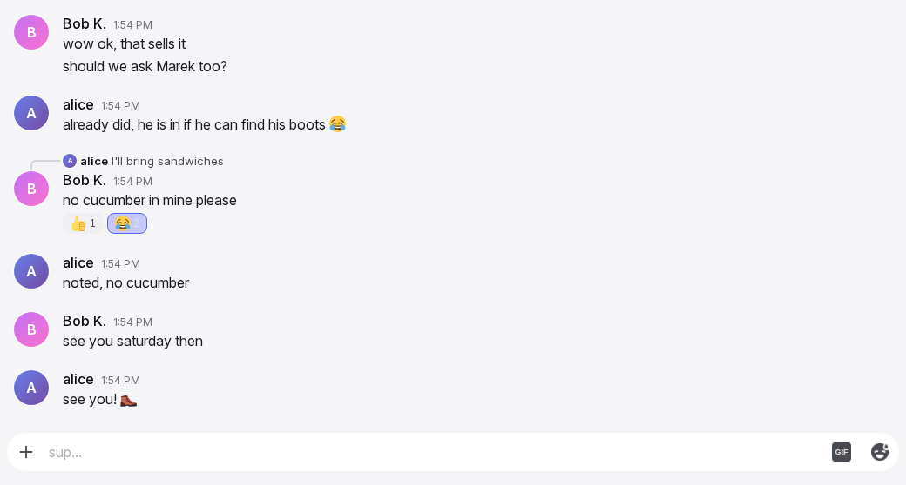
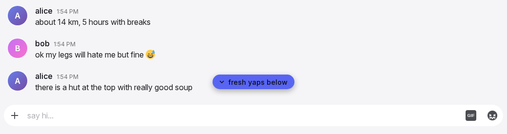
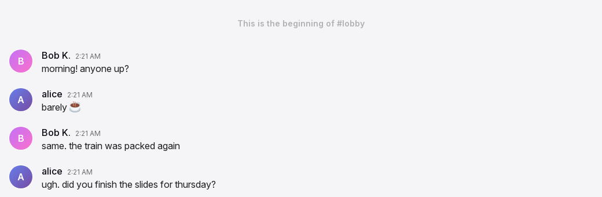
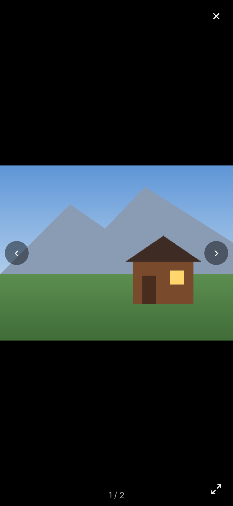

Timeline and media
The timeline is the scrolling list of messages in a conversation, from the oldest loaded message at the top to the newest at the bottom. It decides what is loaded, where the view is, when it follows new messages and when it holds still, and how older messages are reached. It also owns the gallery viewer that opens from an image. The rows themselves are on the message row page.
Anatomy




- The list. Fills the conversation column above the input box and scrolls vertically. A short conversation sits at the bottom, with empty space above it.
- The top note. Shown only when all history is loaded: the room description, the "beginning" note, or the restricted-history note. While older messages exist, nothing shows above the first row.
- The loading row. "Loading older messages..." with a spinner at the top while a page loads.
- New messages pill. A rounded accent pill with a down chevron, centred above the typing strip, shown when messages arrive while the user reads older ones.
- Pending rows. The user's own messages that the server has not accepted yet, at the end of the list.
- Gallery viewer. A full-screen layer over everything, opened from an image: the picture, previous and next, fill, close, and a counter.
Rules
Opening a conversation
TL-01A conversation opens at the bottom, on its newest 50 messages. Nothing jumps to the first unread message.
TL-02When the conversation was shown before on this device, its last known messages paint at once, and the fresh list replaces them when the server answers. A conversation never shown before stays empty until its messages arrive; there is no spinner.
TL-03Opening a conversation marks it read. See Notifications and unread.
TL-04The view scrolls to the bottom after the images in the newest messages have loaded, so the last message is fully in view and nothing is hidden under the input box.
TL-05Non-admins see a room's history only as far back as its admin settings allow: a time window (one day to three months, or unlimited) and, when set, only messages since their own account was created. Admins see everything. Direct messages have no limit.
Older messages
TL-06When the user scrolls to within 100 px of the top and older messages exist, the next 50 load. The loading row shows meanwhile. The row that was at the top stays in place when the older messages appear; the view does not move.
TL-07When the conversation is too short to scroll and older messages exist, a "Load earlier messages" link shows above the first row instead.
TL-08Older messages loaded during a visit stay loaded until the user leaves the conversation. Returning to a conversation opens it as in TL-01.
TL-09When all history is loaded, the top note shows in place of the loading row. In a room: the restricted note "Older messages are not available in this channel" when messages are hidden by TL-05, else the room's description with one line per line break, else "This is the beginning of #{room}". In a direct message: an italic line "This is the beginning of your direct message history with {username}." with the name in bold.
Following the bottom
TL-10While the view is at the bottom, it follows: every new message, reaction, link card, loaded image or growth of the input box keeps the newest message in view. This holds when the phone keyboard opens or closes, when the reply bar appears, and when the picker sheet opens.
TL-11Only an upward scroll by the user releases the follow. A tap, a click, a key or a wheel movement that does not move the list never releases it.
TL-12While the view does not follow, the list holds its position whatever arrives: new messages, reactions, edits, deletions, images loading above or below. The row the user reads stays where it is.
TL-13The follow resumes when the user scrolls back to within 80 px of the bottom, or taps the New messages pill.
TL-14The user's own send always goes to the bottom, with its pending row in view, whether the view was following or not.
TL-15Returning to the tab or the app re-pins the bottom only when the view was following. Otherwise the view stays, and the pill shows if messages arrived.
New messages pill
TL-16When a message from someone else arrives while the view does not follow, the pill appears centred above the typing strip. It never covers the draft. Reactions, edits, link cards and the user's own messages do not show it.
TL-17The pill reads a random phrase from the configured list, "New messages" when none is configured, with a down chevron. The phrase stays while the pill is shown.
TL-18A tap on the pill scrolls to the bottom and turns the follow on. The pill hides when the follow resumes and when the conversation changes.
TL-19A message that arrives while the view does not follow is not marked read until the user reaches the bottom. See Notifications and unread.
Switching conversations
TL-20A switch shows the new conversation's messages and header together. The pill hides, the pending rows of the old conversation are no longer shown, and an open picker closes.
TL-21When the open room is deleted, the user is taken to the lobby.
Gallery viewer
TL-22A tap or click on an image opens the viewer at that image at once, with the images of that message only. GIFs and videos do not open it.
TL-23The viewer covers the whole app on a black layer, 90 % opaque on desktop and fully black on a phone. The picture is centred and fits within 85 % of the screen on desktop, the whole screen on a phone, never cropped.
TL-24Controls float over the picture: close at the top right, previous and next at mid height, fill at the bottom right, and a counter "{n} / {total}" at the bottom centre. With one image there are no previous and next controls and no counter.
TL-25On touch, a horizontal swipe moves one image per fling. Previous, next and the arrow keys move one image. The counter changes when more than half of an image is in view. Tab moves between the viewer's controls.
TL-26The fill control, or a double tap, switches between fit and fill. Fill covers the screen along one axis, centred on the tapped point, and the picture pans. Moving to another image resets it to fit. There is no pinch zoom of the picture itself and no rotation.
TL-27The viewer closes on the close control, on Escape, on a tap outside the picture and the controls, and on a drag down of more than 120 px on touch. During the drag the picture follows the finger and the background fades; a shorter drag springs back. Every close fades out over 0.15 s. Escape closes the viewer only.
TL-28Opening or closing the viewer moves no focus: the phone keyboard and the list position stay as they were.
TL-29The viewer has no caption, no download control and no video. A conversation switch closes it. If the message is deleted while the viewer is open, the viewer closes.
Media in the list
TL-30Images, GIF previews and card thumbnails load as they come near the view. Every media box holds its final size before it loads, so the list does not jump: a 4:3 box for a single image, squares for thumbnails, the known ratio for a GIF.
TL-31GIFs play by themselves, muted. When the browser blocks that, the next tap or key press anywhere starts every paused GIF.
TL-32Media the user has seen is kept on the device and shown without a new download the next time, also after the app was closed.
TL-33The theme's background pattern scrolls with the messages and shows only in the message column.
Without a connection
TL-34Without a connection the list shows the last messages it had for the conversation, and the user can read and scroll them. Older messages that were not loaded cannot be reached; the top of the list reads "Needs a connection" in place of the loading row.
TL-35When the connection returns, the newest messages are fetched again. The view stays where it is when it did not follow, and at the bottom when it did.
States
| State or trigger | Input | What the user sees |
|---|---|---|
| Conversation opened | all | Newest 50 messages, view at the bottom. |
| Opened again on this device | all | Last known messages at once, then the fresh list. |
| Scroll to within 100 px of the top | mouse, touch, keyboard | "Loading older messages..." then 50 more above; the view does not move. |
| Too short to scroll, more history | all | "Load earlier messages" above the first row. |
| All history loaded, room | all | Restricted note, room description, or "This is the beginning of #{room}". |
| All history loaded, direct message | all | Italic "This is the beginning of your direct message history with {username}." |
| New message, following | all | List moves to show it. |
| Reaction, card or image, following | all | Newest message stays in view. |
| Keyboard opens or input box grows, following | touch, keyboard | Newest message stays in view. |
| Upward scroll | mouse, touch, keyboard | Follow released; the view holds from now on. |
| New message from someone else, not following | all | View holds; pill above the typing strip. |
| Own reaction, edit, or card, not following | all | View holds; no pill. |
| Own send, not following | all | List goes to the bottom with the pending row. |
| Scroll back within 80 px of the bottom | mouse, touch | Follow on; pill hidden. |
| Pill tap | mouse, touch | Bottom; follow on; pill hidden. |
| Return to the tab, following | all | Bottom re-pinned. |
| Return to the tab, not following | all | View unchanged; pill if messages arrived. |
| Conversation switched | all | New messages and header together; pill and pending rows gone; picker closed. |
| Image tap | mouse, touch | Viewer at that image. |
| Swipe, arrow key, previous or next | touch, keyboard, mouse | One image; counter updates past half view. |
| Double tap or fill control | touch, mouse | Fit to fill or back; pan in fill. |
| Drag down 120 px | touch | Viewer closes with a fade. |
| Close control, Escape, tap outside | mouse, touch, keyboard | Viewer closes with a fade; focus unchanged. |
| Message deleted while viewing | all | Viewer closes. |
| GIF autoplay blocked | all | Next tap or key starts all GIFs. |
| No connection | all | Last messages readable; "Needs a connection" at the top instead of loading. |
| Connection returns | all | Newest messages refreshed; view position kept. |
Wording
| Where | Text |
|---|---|
| Loading row | "Loading older messages..." |
| Short conversation with more history | "Load earlier messages" |
| Restricted history | "Older messages are not available in this channel" |
| Start of a room | "This is the beginning of #{room}" |
| Start of a direct message | "This is the beginning of your direct message history with {username}." |
| Pill (configured; these are the defaults) | "new gold just spawned", "fresh yaps below", "new loot dropped", "chat moved on, catch up", "new heat below", "someone said something", "fresh tea down there", "plot twist below", "new drops, no cap", "scroll down, legend" |
| Pill when the list is missing | "New messages" |
| Viewer controls | "Previous", "Next", "Close", "Fill screen"; counter "{n} / {total}"; image alt "Full size image" |
| Without a connection | "Needs a connection" |
| Admin history setting, for reference | "History Visibility"; "Unlimited", "1 Day", "3 Days", "1 Week", "2 Weeks", "1 Month", "3 Months"; "Only show messages since user joined" |
Related
- Message row and actions for the rows, the reply quote jump and the pending rows.
- Input box for sending and the typing strip the pill sits above.
- Notifications and unread for when a conversation counts as read.
- Header, sidebar and overlays for the connection state and the error screen.
- Administration for the history visibility settings and the media switches.
- Offline and installation for what is kept on the device.